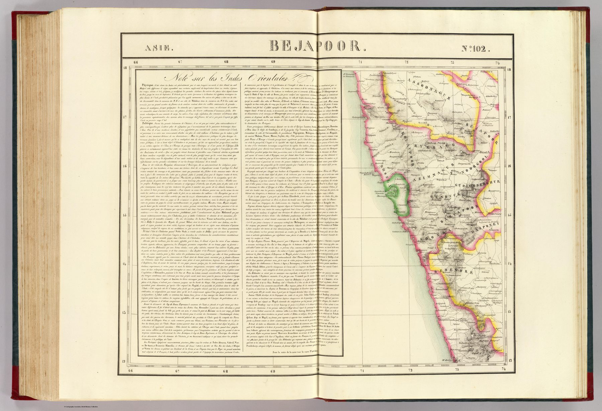

← Home Ground Bombay and Deccan

A universal scale
Vandermaelen’s six-part Atlas Universel mapped the entire world at the common scale of 1:1,641,836. Its sheets could theoretically be assembled into a globe almost eight metres in diameter. This plate, Asia no. 102, covers the Bijapur region and was lithographed by Henri Ode; a geographical note by A. Delavault continues across adjoining sheets.
The grid determines the region
The boundaries of the sheet are produced by the atlas grid rather than by any kingdom, province or natural region. Bijapur is therefore encountered as a segment of a continuous mathematical surface, designed to join seamlessly to neighbouring segments.
Lithography and systematic geography
The atlas was also among the earliest monumental cartographic projects produced by lithography. The method supported an ambitious programme of standardised reproduction: different places, however unequal the underlying information, could be issued in an identical visual and dimensional system.
The gaze
Uniform scale is a promise about evidence that the evidence could not always keep. Bijapur at 1:1,641,836 occupies as much paper as any sheet of Europe and is drawn in the same conventions, whatever the quality of the sources behind it. Delavault’s note running across the sheet edge is the one place where the tile admits that it belongs to a text as well as a grid.
In the Deccan timeline
Gulbarga (1347–c. 1430) · The Raichur doab (c. 1350–1565) · Bijapur under the Adil Shahis (1490–1558) · Dakhni (c. 1400–1700) · Ibrahim Adil Shah II and the Kitab-i-Nauras (r. 1580–1627) · Tukaram and the Varkari tradition (c. 1608–1650) · Gol Gumbaz (1656) · Aurangzeb takes Bijapur and Golconda (1686–1687) · Chhatrapati and Peshwa (1708–1749) · The Hyderabad Residency (1803–1820s) · The Pindaris and the third Anglo-Maratha war (1817–1818) · The Deccan Commission (1818–1826) · The Peshwa surrenders (3 June 1818) · Pune under the Company (1818–1830s) · The Satara raj (1818–1848) · Elphinstone’s Report (25 October 1819) · The inheritance of grants (1831) · Coda: the Deccan as the Company saw it (1827–1893)